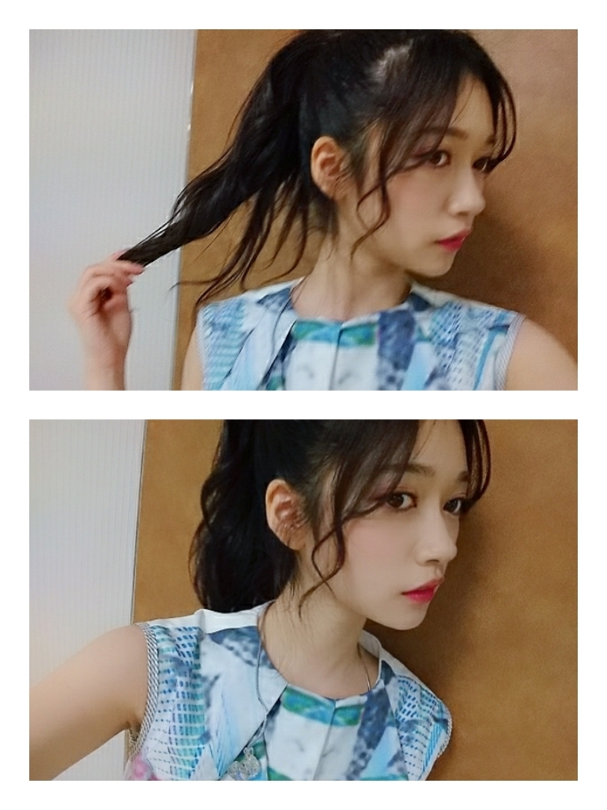
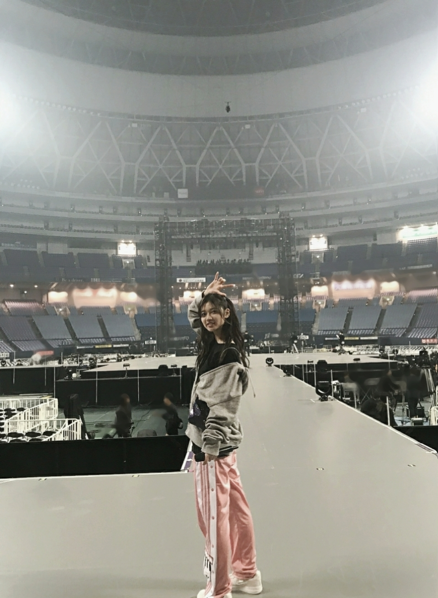

2019/0307Thuスカイダイビング改めて夏らしさもありつつ可愛い曲だなーと思いました
ライブお疲れ様でした
4日間のバースデーライブは
想像を超えるほど体力と時間をかけました
次の日記憶を飛ばすほど寝込んでしまいましたがそろそろ気を取り直してm(__)m
と思ったらいつの間にか
ほんのり春の空気を感じで
花粉がまってて
顔も喉もムズムズしてきて
春は春とて大変ですよね
お互い、頑張っていきましょう
ひとまず、おおきな節目のライブ
完走しきれて良かったです。

必死のポニーテールアピール

感想を
私は特に2日目が濃ゆかったです
ボーダーは何回披露しても全身震えます
昔からしっかり者の純奈と
ボーダー披露前に必ずと言っていいほど
ボーダーだけは何年経っても
緊張するねって話すのがルーティンなくらいに
そわそわしながら6人で待機してます
でも、真剣に向き合ってて
大切に思っているからこそ緊張ってするものだから
それは私達が頑張ってきた証だと思います。
バースデーライブでは過去を思い出して嬉しかったこと悔しかったことを思い出して本番前泣きそうって目を赤らめる事も沢山あったライブでしたが
ステージに立てば責任感や緊張で
涙は出なくて
でも、歌詞やメロディーに感情をのせれば
いつも、歌ってる自分ですらも
音楽に助けられてます
音楽の強さを感じられます。
この大きなパワーを皆さんにも届けていきたいです。
すみません、、、
昇格したあの日付に送る予定のブログでした
2月に送ろうとしたのに
バタバタしてたらあっという間に
3月を迎えて
おそろしいm(__)m
とにかく毎日、4時間にもわたるLIVE
本番前後の時間は沢山のスタッフさんメンバーが寝る間も惜しむ勢いで頑張ってました。
限られた曲数と時間で
皆さんと目あったかな
4日間何処に目を向けても温かい眼差しが向けられて
そして、寺田蘭世と刻まれたグッズを掲げてくれて
心から笑顔で優しくて楽しそうな眼差しを向けてくれて
初めて代々木に立ったとき
神宮球場に立ったとき
いつも大きくなっていくステージにタジタジなうえ
私の事なんて知ってくれてるのかなって心細く心配になるライブもありました。
初めての握手会の様子
オーディション映像
初めてのステージ
沢山、歴史を振り返るライブでした。
4日間で自分の歴史
成長を感じることができました‼
1期生2期生はオリジナルにできるだけ忠実にと言う事で
あまり、ユニットなども代打にはたちませんでした
何だか、いつも代打や卒業メンバーの位置にもいるからオリジナルになると
自分でも頑張ったねって認めてあげたい気持ちと
今年はもう一歩大きく歩みたいなって気持ちがうまれました。
なんて、書いていいのか言葉にしていいのか難しいけど
4日間素敵なステージと向き合って思ったことは
出逢ってくれてありがとう

私も乃木坂46に出逢えてよかった
だから、乃木坂46らしさを大切にしたい
新しい世界もみたいし
皆さんと共有していきたいです。
西野さんお疲れ様でした
いつも自分を持ってて
これは好きこれは苦手だとハッキリ言える強さも持ってる人でした
私はそういう強さもあるのに
何だかふにゃーとしてる西野さんが好きでした(^・^)
ライブの終わらせ方や
皆が泣いてる中
ニコニコ清々しい笑顔
いつも通りの自然体な姿で卒業を迎えた
西野さんがらしいなと思い
私も泣かずに笑顔で送ることが出来ました
かりんちゃんがある日言ってくれたんだけど
蘭世とにゃー趣味にてるからもっと話せばいいのにって言ってくれて
確かに、今も凄く凄く西野さんに話したい事沢山あるんだ
本人に連絡しちゃお!!!

こっそり、隠し撮り
皆が話し合ってたのを遠目から
可愛い人達ですm(__)m

2019/03/07 19:48


コメント(529)
最近寂しい
握手会行きたい！
可愛すぎるよー
ありがとう。
バスラお疲れ様ー！！ボーダーまじ最高でした！
バスラ本当にお疲れ様でした！ 生でボーダー、ブランコ見たかったな〜。 これから先もずーっと蘭世ちゃん大好きよ
バースデーライブ行けなかったから
来年こそは行きたい！
蘭世のパフォーマンスをこの目に焼き付けたい！
またコメントするねʕ•̫͡•ིʔྀ
さゆりんご軍団も、スカイダイビングもよかったよ！！！
卒コンの蘭世めっちゃかわいかった！！
七瀬も元気そうでよかったわ、これからも頑張って！
蘭世の頑張りがいつも生きる力になってます。
これからも自分のペースで全力で頑張ってください。
大好きです。
何回も何回も救われてきたよ。
今週末久々にまた握手に現れるから、たくさん話させてね。
蘭世の話もたくさん聞くね。
あなたに出会えて幸せです。
バースデーライブお疲れ様でした！
ボーダー良かったねーほんとに！
若さんの卒セレでも観たのに
またボーダー組の成長した姿に感動して
涙が溢れ出しました。
たくさん壁にぶつかるかもしれんけど
8年目もよろしくお願いします！
卒業したなぁちゃんと連絡取り合っている乃木坂46を見てると本当に仲が良くていいグループだな〜と感じさせられるよ！自分も乃木坂46に出会えてよきよき！笑
これからも頑張れ
バスラ2.3.4日目いってボーダー、ブランコ見て蘭世のセンターやっぱりカッコイイ好きって思いました！
バスラお疲れさまでした！！
やっと念願のボーダーを生で見れて感動したよ！
バースデーライブ、お疲れ様でした(^^)
蘭世の想いが伝わってきました。
蘭世は乃木坂らしさに溢れる人だから、これからの未来を応援してます！
バスラお疲れ様でした！
ライビュでしか見れなかったけどすごくかっこよかったし
改めて推しててよかったって思えました！
濃ゆかったって訛りかな？僕も使ってて嬉しみを
感じてます！
次の更新も待ってるね！！
やぁ(｡･ω･)ﾉﾞ親愛なる蘭世
ブログ更新ありがとう！！
今からゆっくり読んでコメントするわな～
きっとまた後で(｡･ω･)ﾉﾞ
1日目だけしか参戦出来なかったんだ〜
でもアリーナの前の方でなんと！蘭世に！さゆりんごパンチ貰えたよ！
握手会でもう最後で会えなくなるねって話してから結構経ったけど蘭世に会いたい( •̥ ˍ •̥ )
そんな具合で蘭世は特別な存在です！
お仕事大変そうだけど体調に気をつけて楽しんで！
年末の個別握手会からご無沙汰して
すいません、アルバム握手会の幕張
と名古屋で行きますのでよろしくです
蘭世の勢いとまランゼですよね
ではおやすみなさい
バスラのボーダーは思わず泣いてしまうほど感動してしまいました…
パフォーマンスを見ていた中でだんだん大人っぽさや自信に道溢れてるような表情になっていて心震えるものがありました
本当に自分の目でライブで見れたことを嬉しく思いました！ありがとうございました！
２期生大好きだよー！！
バスラお疲れ様でした！僕は行けませんでしたけど、蘭世さんがしっかり楽しめたなら良きです！
2日目は濃ゆいでしょうね。ボーダーにブランコ。僕が聴きたかった曲が沢山あります。行きたかった。
そのルーティンは、忘れない方がいいです。忘れたら行けないですし、その気持ちは持っとかないと、初心にも帰れないですもんね。成長出来てるって感じたならめちゃくちゃ良いことです。
代打で3期生多いなって思ったのはそういう事だったのですね。僕的にはもう少し2期生の代打欲しかったなって思いましたが、それも味ですよね。
これからも蘭世さんが成長していくと共に、僕も成長出来たらなと。応援していきます。
大好きです。
ユウキ
日々のお仕事お疲れさま。
バースデーライブもお疲れ様ね〜。
いつも「蘭世は泣くことよりも笑ってることの方が多いな」って思ってた、そうか責任感、だったんだね。
また一層好きになりました。えへへ。
んー、ぼくも言いたいことたくさんあるけど…なんて書いたらいいのかな。笑
大好きで、大切で、ぼくのたった一つの人生だけど貴方のために生きるのもいいなって思ってる最近だよ。
重いかなぁ。笑
でもそんな気持ち。
出会ってくれてありがとう。
いつもいつでも素敵です。
そのままで。
そしてコメント書くの久しぶりです
ライブ2日目行ったよ
ボーダーもブランコも観れて本当に満足してた笑
本当にいい日だったよ！
ありがとう！これからも応援してるよ！
やっぱり蘭世がｲｯﾁｬﾝﾖ!
バースデーライブ本当にお疲れ様でした！！
蘭世すごく輝いてたよ。
こちらこそ出逢ってくれてありがとう。
乃木坂に入ってくれてありがとう。
これからもずっとずっと蘭世を応援するから。
いつもありがとう。
またコメントするわ！
蘭世すきよ～
いやー、2日目は実に濃ゆかったですな笑
2期大好きな僕からしたら本当に最高な1日でした！行けてよかった！
にゃーとは似てるとこ多いから俺も推し始めたのかも笑
卒業は寂しいけど新たな1歩。
乃木坂の寺田蘭世をもう少し応援させてください！
２日目から最終日の３日間参加しましたが
どの日も寺田蘭世という子が歩んだ道を
感じることが出来ました。
蘭世推しのぼくはやっぱり２日目が一番濃かった気がします。
お疲れ様でした。
これからも蘭世と乃木坂と素敵な景色を見れるのを
ワクワクしています。
ボーダー大好きですし、
さゆりんご軍団も良かったです！！
バースデーライブお疲れ様でした。あんな長時間のライブを4日間も成功させたのは本当にすごいことだよ。メンバーの頑張りもあるし、なによりスタッフさんの支えがあって、僕らファンが楽しんでライブを観ることができたなって。感謝(^ ^)
2日目行けなくてボーダー観れなかったこと、一生後悔すると思ってますほんとに悲しい。でも初日と最終日だけでも観れて本当に良かった～！
さゆりんご軍団の単独ライブ期待してるね！
バスラお疲れ様でした。
全曲披露、全日は参戦できなかったけどすごく感動した。
ボーダーは鳥肌もんでしたよ。
初めてボーダーを生で見れてよかった。
ホントに感動をありがとう。
俺も好き！♫
雨が降ったりやんだりして、その度に花粉の軍勢が押し寄せてきて俺は死にそうになってます（笑）無限に出るくしゃみに鼻水。家が水没するんじゃねーかと心配してる
バスラお疲れ様でした！
ボーダーは初めて聞いた時からずっと好きな曲です。なかなかライブで聴けないから、聴けた時はレア感と嬉しさで舞い上がりますな♫
蘭世たちが昇格した時、ほんと嬉しかった。乃木坂史上、初の研究生制度やったもんな。みんなの涙につられて、あの時の思いは今でも忘れない
ほんとよかった♫乃木坂にも、蘭世に出会えて良き人生ですわ！
なぁちゃん卒業の実感なかったけど、卒コンやると実感湧いちゃうね。俺はライブビューイングで見てたけど、帰り道は遠回りしたくなる聞いた時にもう涙が（笑）卒業してもメンバーの繋がりは永遠やでな。女優西野七瀬と沢山話せるといいな♫
今後の握手会もよろしくね！
ではでは、花粉に負けずに生きよう！
コメントする